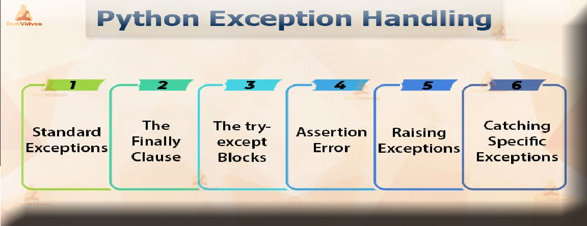
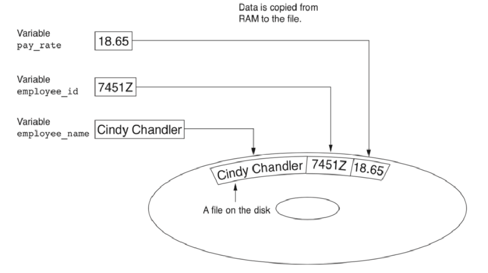
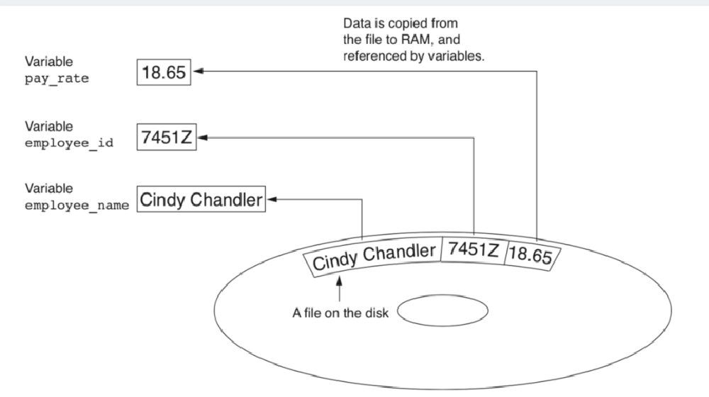
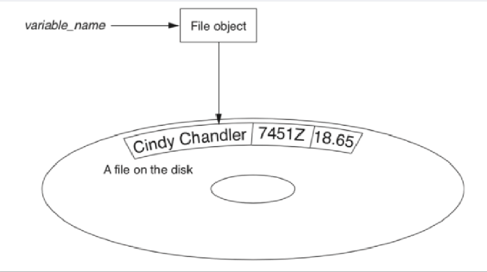

LECTURE - 06 FILES AND EXCEPTIONS
FILE INPUT/OUTPUT
• สำหรับโปรแกรมที่จะเก็บข้อมูลระหว่างเวลาที่รัน คุณต้อง saveข้อมูล
ข้อมูลจะถูกบันทึกลงในไฟล์ โดยทั่วไปแล้วจะอยู่บนดิสก์คอมพิวเตอร์
ข้อมูลที่บันทึกไว้สามารถเรียกค้นและใช้งานได้ในภายหลัง
• "Writing data to" : บันทึกข้อมูลลงในไฟล์
• Output file: ไฟล์ที่เขียนข้อมูลถึง
• "Reading data from" : กระบวนการดึงข้อมูลจากไฟล์
• Input file: ไฟล์ที่ใช้อ่านข้อมูล
WRITE DATA TO FILE
READ DATA FROM FILE
TYPE OF FILES
โดยทั่วไป มีไฟล์สองประเภท
1. ไฟล์ข้อความ: มีข้อมูลที่เข้ารหัสเป็นข้อความ
2. ไฟล์ไบนารี: มีข้อมูลที่ยังไม่ได้แปลงเป็นข้อความ
สองวิธีในการเข้าถึงข้อมูลที่จัดเก็บไว้ในไฟล์
1. การเข้าถึงตามลำดับ: ไฟล์อ่านตามลำดับตั้งแต่ต้นจนจบ
ข้ามไปก่อนไม่ได้
2. การเข้าถึงโดยตรง: สามารถข้ามไปยังข้อมูลใด ๆ ในไฟล์ได้โดยตรง
FILE
มีสามขั้นตอนเสมอที่ต้องทำเมื่อไฟล์ถูกใช้โดยโปรแกรม
• Open the file - การเปิดไฟล์จะสร้างการเชื่อมต่อระหว่างไฟล์กับโปรแกรม
การเปิดไฟล์เอาท์พุตมักจะสร้างไฟล์บนดิสก์และอนุญาตให้โปรแกรมทำ
เขียนข้อมูลลงไป การเปิดไฟล์อินพุตทำให้โปรแกรมสามารถอ่านข้อมูลจากไฟล์ได้
• Process the file - ในขั้นตอนนี้ ข้อมูลจะถูกเขียนไปยังไฟล์ (หากเป็นไฟล์เอาต์พุต) หรือ read
จากไฟล์ (หากเป็นไฟล์อินพุต)
• Close the fileเมื่อโปรแกรมใช้งานไฟล์เสร็จแล้ว ไฟล์จะต้องปิดลง
การปิดไฟล์จะยกเลิกการเชื่อมต่อไฟล์จากโปรแกรม
OPEN FILE
FILE MODE
| Mode | Description |
|---|---|
| 'r' | เปิดไฟล์สำหรับอ่านเท่านั้น ไม่สามารถเปลี่ยนหรือเขียนไฟล์ได้ |
| 'w' | เปิดไฟล์สำหรับเขียนหากมีไฟล์อยู่แล้ว ให้ลบเนื้อหาออก หากไม่มีอยู่ ให้สร้างขึ้นใหม่ |
| 'a' | เปิดไฟล์ที่จะเขียนถึง ข้อมูลทั้งหมดที่เขียนลงในไฟล์จะถูกผนวกเข้ากับส่วนท้ายของไฟล์ หากไม่มีไฟล์อยู่ ให้สร้างขึ้นใหม่ |
Exceptions
การจัดการข้อผิดพลาด (Error) ในภาษา Python ที่เรียกว่า Exception ซึ่งสามารถเกิดขึ้นได้ถึงแม้ว่า syntax ของโปรแกรมถูกต้อง แต่บางคำสั่งในโค้ดโปรแกรมนั้นทำให้เกิดข้อผิดพลาดขึ้น ซึ่งการจัดกการข้อผิดพลาดนั้นเป็นสิ่งที่ควรทำในการเขียนโปรแกรม เพราะมันจะทำให้โปรแกรมของคุณไม่แสดงข้อผิดพลาดให้กับผู้ใช้ได้เห็น
Syntax Errors
เมื่อคุณเขียนโปรแกรมไม่ถูกต้องตามหลักไวยากร์ของภาษาจะทำให้เกิดข้อผิดพลาดขึ้นขณะที่โปรแกรมได้ทำการตรวจสอบซอสโค้ดของคุณหรือเราเรียกว่า Syntax errors
if True
print('Enter the if block')ในตัวอย่าง เป็นโค้ดของโปรแกรมที่จะทำให้เกิด Syntax errors ขึ้น เพราะว่าในคำสั่ง if จะต้องมีเครื่องหมายโคลอน (:) หลังจากเงื่อนไขของมัน เมื่อคุณรันโปรแกรมจึงทำให้เกิดข้อผิดพลาดขึ้น ดังนั้นในกรณีเกิด Syntax errors เราจำเป็นต้องแก้ไขโค้ดของโปรแกรมให้ถูกต้องก่อนจึงจะสามารถรันโปรแกรมได้
File "exception.py", line 1
if True
^
SyntaxError: invalid syntaxนี่เป็นตัวอย่างผลลัพธ์ของข้อผิดพลาดที่เกิดขึ้นเมื่อคุณรันโค้ดดังกล่าว โดย Python จะแสดงชนิดของข้อผิดพลาดที่เกิดขึ้น ซึ่งประกอบไปด้วยชื่อไฟล์ บรรทัดที่เกิดข้อผิดพลาด และประเภทของข้อผิดพลาด ตามด้วยข้อความอธิบายสิ่งที่เกิดขึ้น
Handling Exceptions
มื่อเกิด Exception ขึ้นโปรแกรมจะหยุดการทำงานในทันที ดังนั้นเพื่อให้โปรแกรมของเราสามารถทำงานต่อไปได้ เราจำเป็นต้องจัดการกับ Exception เหล่านั้น ซึ่งในภาษา Python มีรูปแบบในการจัดการกับ Exception ดังนี้
try:
# do something
except firstError:
# handing exception
except secondError as e:
# handing exception
except:
# handing exception
else:
# excuted when no exceptionในการจัดการกับ Exception จะใช้คำสั่ง try ... except สำหรับตรวจจับข้อผิดพลาดที่จะเกิดขึ้น ในบล็อคของคำสั่ง try จะเป็นการทำงานที่จะทำให้เกิดข้อผิดพลาดขึ้น และเราสามารถมีบล็อคคำสั่ง except ได้หลายอันเพื่อจัดการข้อผิดพลาดประเภทต่างๆ และถ้าหากคุณไม่ได้กำหนดประเภทให้กับ except หมายความว่ามันสามารถจัดการกับข้อผิดพลาดได้ทุกประเภทที่สืบทอดมาจากคลาส Exception นอกจากนี้ คุณยังสามารถใช้ else clause ซึ่งจะทำงานเมื่อไม่เกิดข้อผิดพลาดขึ้นในขณะที่โปรแกรมทำงานในบล็อคคำสั่ง try ต่อไปมาดูตัวอย่างการจัดการข้อผิดพลาดในภาษา Python
try:
a = int(input('Enter first number: '))
b = int(input('Enter second number: '))
print("%d / %d = %f" % (a, b, a / b))
except ValueError as e:
print ('You should enter a valid number')
except ZeroDivisionError as e:
print ('Handing error: ', e)ในตัวอย่าง เป็นโปรแกรมสำหรับรับค่าตัวเลขสองตัวจากทางคีย์บอร์ดและแสดงผลหาร ในบล็อคของคำสั่ง try เป็นการรับค่าตัวเลขและเก็บใส่ตัวแปร a และ b ตามลำดับ เนื่องต้องการแปลงค่าที่รับมาเป็นตัวเลขด้วยฟังก์ชัน int() ดังนั้น เราต้องมีบล็อค except เพื่อจัดการกับข้อผิดพลาด ValueError ที่จะเกิดขึ้นเมื่อค่าที่ใส่เข้ามานั้นไม่ได้เป็นตัวเลข
ต่อมาเป็นการแสดงผลการหารของตัวเลขเหล่านั้น ซึ่งสามารทำให้เกิด ZeroDivisionError exception ขึ้นได้เช่นกัน เราจึงได้ทำการใช้คำสั่ง except เพื่อจัดการกับข้อผิดพลาดนี้ ในการจัดการข้อผิดพลาดคุณอาจจะบอกวิธีการแก้ไขหรือแสดงรายละเอียดของข้อผิดพลาดนั้นให้ผู้ใช้โปรแกรมได้เห็นก็ได้
Enter first number: hello
You should enter a valid number
Enter first number: 10
Enter second number: 0
Handing error: division by zero
Enter first number: 5
Enter second number: 3
5 / 3 = 1.666667นี่เป็นผลลัพธ์เมื่อเราได้รันโปรแกรมเป็นจำนวนสามครั้ง ครั้งแรกเป็นการใส่ข้อมูลที่ไม่ใช่ตัวเลขเข้ามา ทำให้เกิดข้อผิดพลาดขึ้นและโปรแกรมทำงานในบล็อคคำสั่ง exception ของ ValueError ต่อมาเราได้ใส่ตัวเลขตัวที่สองเป็นศูนย์ ทำให้เกิดข้อผิดพลาด ZeroDivisionError ขึ้น และสุดท้ายโปรแกรมของเราทำงานได้โดยไม่มีข้อผิดพลาด
สำหรับการจัดการข้อผิดพลาดในการทำงานกับไฟล์ ซึ่งในการทำงานกับไฟล์นั้นมีข้อผิดพลาดต่างๆ ที่สามารถเกิดขึ้นได้ เช่น การเปิดไฟล์ที่ไม่มีอยู่ หรือไฟล์นั้นไม่พร้อมใช้งาน เป็นต้น
import sys
try:
f = open('file.txt')
s = f.readline()
print(s)
except OSError as err:
print("OS error: ", err)
except:
print("Unexpected error occured")
else:
print("File closed successfully")
f.close()ในการทำงานกับไฟล์ เราทำการนำเข้าไลบรารี่จาก sys มายังโปรแกรม และในบล็อคของคำสั่ง try เป็นการเปิดไฟล์ชื่อ file.txt และอ่านข้อมูลบรรทัดแรกมาแสดงผลทางหน้าจอ ในการเปิดไฟล์ถ้าหากไม่มีไฟล์อยู่จะทำให้เกิดข้อผิดพลาด OSError ขึ้นและเราได้ทำการแสดงข้อความบอกทางหน้าจอ เรายังทำการจัดการกับข้อผิดพลาดต่างๆ ที่อาจจะเกิดขึ้นด้วย
ในบล็อคของคำสั่ง else จะทำงานเมื่อไม่มีข้อผิดพลาดเกิดขึ้น นั้นหมายถึงเราเปิดไฟล์เพื่ออ่านข้อมูลได้สำเร็จ ดังนั้นเราจึงควรจะทำการปิดไฟล์ในบล็อคคำสั่งนี้
OS error: [Errno 2] No such file or directory: 'file.txt'marcuscode.com
File closed successfully
นี่เป็นผลลัพธ์ของโปรแกรมที่จะแสดงข้อผิดพลาดขึ้นเมื่อเรารันโปรแกรมในทันทีโดยที่ยังไม่มีไฟล์ file.txt อยู่ และถัดมาเป็นผลลัพธ์ของโปรแกรมเมื่อเราสร้างไฟล์ file.txtและภายในไฟล์มีข้อความ "marcuscode.com" อยู่ข้างใน ทำให้โปรแกรมสามารถอ่านไฟล์ได้และนำข้อความมาแสดงผลบนหน้าจอ และหลังจากนั้นโปรแกรมทำงานในบล็อคคำสั่ง else
Raising Exceptions
ในภาษา Python มี build-exception ที่จะเกิดขึ้นโดยพื้นฐานเมื่อโปรแกรมมีข้อผิดพลาดขึ้น อย่างไรก็ตามโปรแกรมเมอร์สามารถสั่งให้เกิด Exception ขึ้นเองได้ โดยการใช้คำสั่ง raise มาดูตัวอย่างการใช้งาน
try:
name = input('Enter your name: ')
if name == 'mateo':
raise Exception('Whoa! Mateo you are not allowed here')
print('Hi ', name)
except Exception as err:
print("Exception: ", err)
else:
print('Bye')ในตัวอย่าง เป็นโปรแกรมสำหรับรับชื่อจากทางคีย์บอร์ดและทักทาย ถ้าหากชื่อที่ใส่เข้ามานั้นเป็น "mateo" เราจะทำให้เกิด exception ขึ้นด้วยคำสั่ง raise โดยสร้างออบเจ็คจากคลาส Exception ซึ่งเป็นคลาสในภาษา Python และกำหนดข้อความของเราเอง และถ้าหากชื่อที่ใส่เข้ามาเป็นอย่างอื่นที่ไม่ใช่ "mateo" โปรแกรมจะแสดงการทักทายและจบการทำงาน
Enter your name: mateo
Exception: Whoa! Mateo you are not allowed hereEnter your name: Marcus
Hi Marcus
Byeและนี่เป็นผลลัพธ์การทำงานของโปรแกรม โดยครั้งแรกจะเกิดข้อผิดพลาดขึ้นเพราะว่าเราได้ใส่ชื่อเข้ามาเป็น "mateo" และครั้งที่สองไม่เกิดข้อผิดพลาดเพราะชื่อที่ใส่เข้ามาเป็น "marcus" และหลังจากนั้นโปรแกรมแสดงข้อความทักทายและคำบอกลาในบล็อคของคำสั่ง else
การสร้าง Exceptions
นอกจากการใช้งาน build-in exception จากภาษา Python แล้ว คุณยังสามารถสร้างคลาส Exception ขึ้นมาเองได้ เพื่อให้สามารถทำงานได้ตามที่ต้องการ ยกตัวอย่างเช่น การเพิ่มแอตทริบิวต์หรือเมธอดต่างๆ ภายในคลาส ต่อไปเราจะมาสร้างคลาสเพื่อจัดการข้อผิดพลาดของเราเอง โดยในการสร้างคลาสนั้นเราต้องทำการสืบทอดมาจากคลาส Exception เสมอ มาดูตัวอย่าง
class UsernameError(Exception):
def __init__(self, message, error):
super().__init__(message)
self.message = message
self.error = error
def getMesssage(self):
return self.message + ' \'' + self.error + '\''
class PasswordError(Exception):
def __init__(self, message, error):
super().__init__(message)
self.message = message
self.error = error
def getMesssage(self):
return self.message + ' \'' + ('*' * len(self.error)) + '\''
# โปรแกรมเริ่มการทำงาน
try:
print('Login')
username = input('Username: ')
password = input('Password: ')
if (username != 'mateo'):
raise UsernameError('Invalid username', username)
if (password != '1234'):
raise PasswordError('Invalid password', password)
print('Login success')
except UsernameError as e:
print('Exception: ', e.getMesssage())
except PasswordError as e:
print('Exception: ', e.getMesssage())ในตัวอย่างของโปรแกรมนั้นจะแบ่งออกเป็นสองส่วน ในส่วนแรกเป็นการสร้างคลาสโดยเราได้สร้างคลาสมาสองคลาสคือ UsernameError เป็นคลาสของ Exception สำหรับจัดการเมื่อ username ไม่ถูกต้อง และคลาส PasswordError เป็นคลาสของ Exception สำหรับจัดการข้อผิดพลาดเมื่อรหัสผ่านไม่ถูกต้อง โดยในคลาสเราได้กำหนดแอตทริบิวต์สองตัวคือ message เป็นความสำหรับอธิบายข้อผิดพลาด และ error เป็นข้อมูลที่เกิดข้อผิดพลาดขึ้น และภายในคลาสทั้งสองมีเมธอด getMesssage() สำหรับรับข้อความการแสดงข้อผิดพลาดที่แตกต่างกันออกไป
ในส่วนต่อมา เป็นการทดสอบการจัดการข้อผิดพลาดของเรา โดยการจำลองการทำงานระบบ Login สำหรับให้ผู้ใช้เข้าสู่ระบบโดยการใส่ username และ password โดยเราจะทำการตรวจสอบถ้าหากชื่อผู้ใช้ไม่เป็น "mateo" เราจะทำให้เกิดข้อผิดพลาด UsernameError ขึ้น แต่ถ้าชื่อผู้ใช้ถูกต้องแต่รหัสผ่านยังผิดจะทำให้เกิดข้อผิดพลาด PasswordError ขึ้น นอกจากนี้ หมายความว่าการเข้าสู่ระบบสำเร็จ
Login
Username: guest
Password: 1111
Exception: Invalid username 'guest'Login
Username: mateo
Password: 5555
Exception: Invalid password '****'Login
Username: mateo
Password: 1234
Login successนี่เป็นผลลัพธ์การทำงานของโปรแกรมจากการรันสามครั้ง ครั้งแรกเราได้ใส่ชื่อผู้ใช้ที่ไม่ถูกต้อง และครั้งที่สองเราได้ใส่ชื่อผู้ใช้ถูกต้องแต่รหัสผ่านผิด คุณจะสังเกตุเห็นสิ่งที่แตกต่างคือการแสดงข้อผิดพลาดของรหัสผ่านจะถูกปกปิดไว้ เพราะเราเรียกใช้เมธอด getMesssage() ซึ่งมีการทำงานที่ไม่เหมือนกันสำหรับแต่ละคลาส และสุดท้ายเป็นการใส่ชื่อผู้ใช้และรหัสผ่านถูกต้อง โปรแกรมจะบอกว่าเข้าสู่ระบบสำเร็จ
การใช้คำสั่ง Finally
อีกคำสั่งหนึ่งที่จำเป็นสำหรับการจัดการข้อผิดพลาดก็คือคำสั่ง finally ที่สามารถใช้ร่วมกับคำสั่ง try ... except ได้ โดยการทำงานของมันนั้นจะแตกต่างจาก else คือจะทำงานในบล็อคคำสั่งนี้เสมอ ไม่ว่าจะเกิดข้อผิดพลาดหรือไม่ก็ตาม มาดูตัวอย่างการใช้งาน
try:
items = ['Mac', 'iPhone', 'iPad']
print('Avilable items: ', items)
need = input('What do you want to buy?: ')
if need not in items:
raise Exception('Sorry, \'' + need + '\'' + ' out of stock')
print('You have purchased ' + '\'' + need + '\'')
except Exception as e:
print(e)
finally:
print("Thank you for shopping with us")ในตัวอย่าง เป็นโปรแกรมสำหรับสั่งชื้อสินค้าชนิด เราได้ประกาศสินค้าที่มีอยู่ใน Stock ใส่ไว้ในตัวแปรลิสต์ items โดยโปรแกรมจะถามว่าต้องการซื้ออะไร หลังจากที่ใส่ชื่อสินค้าเข้ามาแล้ว เราได้ทำการตรวจสอบว่ามีในลิสต์ items หรือไม่ ถ้าหากไม่มีจะแสดงข้อผิดพลาดขึ้นว่าสินค้าหมด และถ้าหากมี จะแสดงข้อความว่าได้ซื้อสำเร็จแล้ว และในตอนสุดท้ายเราได้แสดงข้อความขอบคุณไม่ว่าลูกค้าได้จะได้ซื้อหรือไม่ก็ตาม ดังนั้น เราจึงกำหนดให้มันทำงานในบล็อคคำสั่ง finally
Avilable items: ['Mac', 'iPhone', 'iPad']
What do you want to buy?: xbox
Sorry, 'xbox' out of stock
Thank you for shopping with usAvilable items: ['Mac', 'iPhone', 'iPad']
What do you want to buy?: iPad
You have purchased 'iPad'
Thank you for shopping with usนี่เป็นผลลัพธ์การทำงานของโปรแกรม อันแรกเป็นการใส่ชื่อสินค้าที่ไม่มีอยู่ ดังนั้นโปรแกรมจะแสดงว่าสินค้าหมดแล้ว และต่อมาเป็นการใส่ชื่อสินค่าที่มีอยู่คือ "iPad" และในตอนท้ายเราแสดงคำขอบคุณเสมอ
การจัดการข้อผิดพลาดหรือ Exception ในภาษา Python เราได้ให้ตัวอย่างแบบต่างๆ ที่คุณสามารถนำไปประยุกต์เขียนโปรแกรมในขั้นสูงได้ต่อไป นอกจากนี้เรายังพูดเกี่ยวกับการสร้างคลาส Exception ขึ้นมาเองพร้อมวิธีการเรียกใช้งาน ซึ่งจะทำให้คุณสามารถขยายความสามารถในการจัดการข้อผิดพลาดตามที่คุณต้องการได้